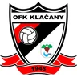

, výkop 10:00
DomáciHostia
 OFK - Drahovce
OFK - Drahovcebez výsledku
 MFK Vrbové U11 A
MFK Vrbové U11 ANávrh webu, nie oficiálna stránka klubu
Prípravka U11 ObFZ Trnava, 5. miesto z 10
, výkop 10:00
OFK - DrahovceMFK Vrbové U11 AVýsledky prípraviek sa nezapisujú, rozpis zápasov je nižšie.
Prípravka U11 ObFZ Trnava
| # | Tím | Z | V | R | P | Skóre | B |
|---|---|---|---|---|---|---|---|
| 1. | FC Banka | 8 | 0 | 8 | 0 | 0:0 | 8 |
| 2. | 8 | 0 | 8 | 0 | 0:0 | 8 | |
| 3. | 8 | 0 | 8 | 0 | 0:0 | 8 | |
| 4. | 8 | 0 | 8 | 0 | 0:0 | 8 | |
| 5. | 8 | 0 | 8 | 0 | 0:0 | 8 | |
| 6. | 8 | 0 | 8 | 0 | 0:0 | 8 | |
| 7. |  OFK Kľačany | 8 | 0 | 8 | 0 | 0:0 | 8 |
| 8. | 8 | 0 | 8 | 0 | 0:0 | 8 | |
| 9. | 8 | 0 | 8 | 0 | 0:0 | 8 | |
| 10. | 0 | 0 | 0 | 0 | 0:0 | 0 |
Hráči, ktorí v kalendárnom roku 2026 nastúpili alebo boli v nominácii na zápas (podľa Sportnetu). Pri mládeži uvádzame len mená.